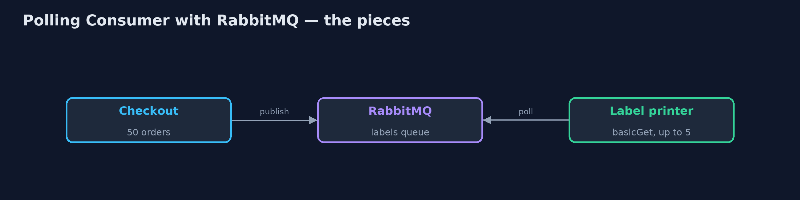
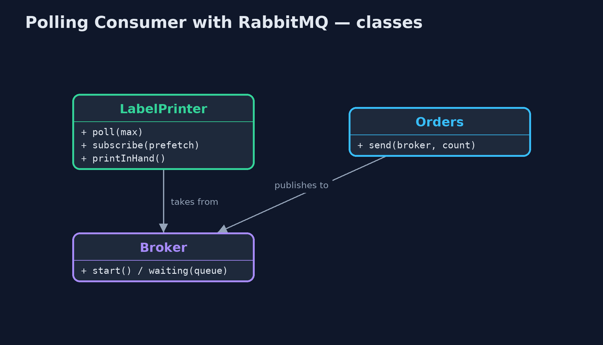
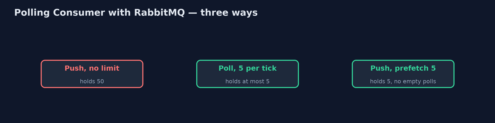
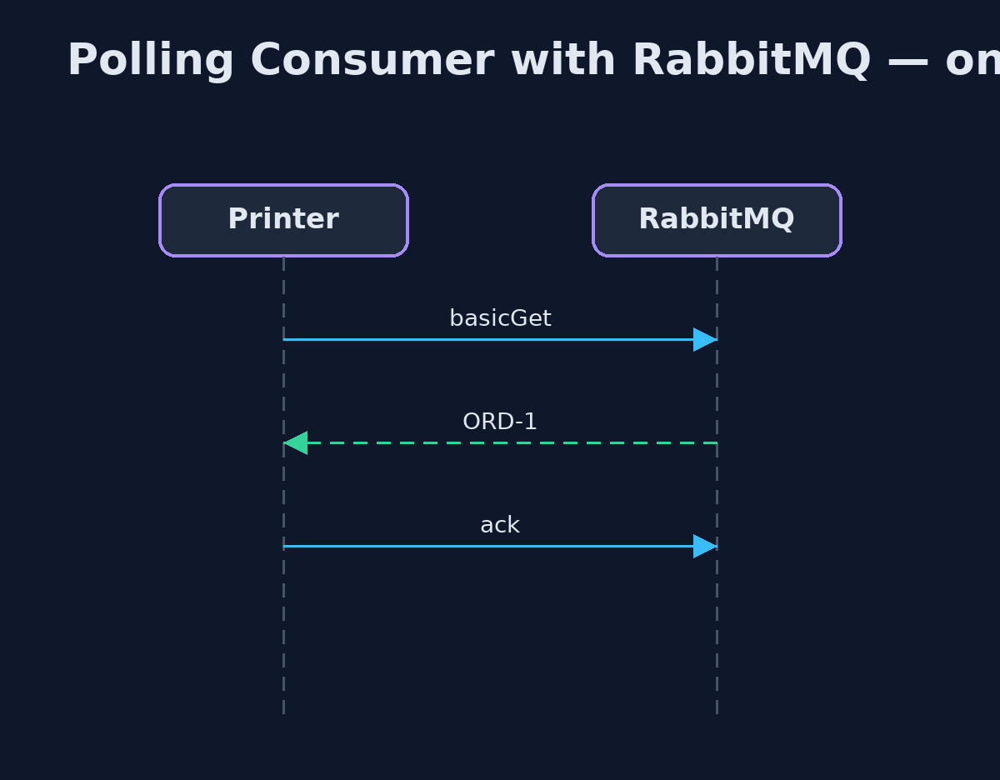

Polling Consumer with RabbitMQ Pattern
src/main/java/com/jk/explore/pollingrabbit/
├── Broker.java A real RabbitMQ broker, running in a container that this demo starts and stops itself
├── LabelPrinter.java The warehouse label printer, as a RabbitMQ consumer
├── Orders.java Checkout's side: puts orders on the printing queue
├── Poll.java Waits for a real condition, checking often, and gives up after a limit
└── RabbitPollingConsumerDemo.java The five acts, against a real RabbitMQ broker started and stopped by this programLet the label printer take orders from a real RabbitMQ queue only when it is ready, by polling with basicGet, and compare it with RabbitMQ's own answer: push with a prefetch limit.
This is the real-infrastructure version of the Polling Consumer pattern. The plain Java version, a separate project in this category, simulates a queue and ticks of a clock. Here a real RabbitMQ broker, started in a container by the demo itself, holds the orders.
RabbitMQ can hand messages to a receiver in two ways. It can push them as fast as it can, which is basicConsume, or the receiver can ask for one at a time, which is basicGet: the polling consumer. The demo shows both, the cost of each, and RabbitMQ's own middle way: push, but with a prefetch limit, so the broker never hands over more than the receiver can hold.
The idea in everyday terms
Think of a busy restaurant kitchen. A waiter could keep shoving every order through the hatch as it comes, until the rail overflows. Or the chef could walk out and ask for the next order when ready, which means many wasted trips when the dining room is empty. Most kitchens do something in between: the waiter keeps a few tickets on the rail, and adds one each time the chef finishes one.
The scenario
The online store's warehouse label printer prints a label for each order. Its memory holds only ten jobs. During a sale, fifty orders arrive in a burst, and when the printer runs out of paper it must stop taking work without any orders being lost.
Run
This project needs a running container runtime, such as Docker Desktop: the demo starts a real RabbitMQ 4.3.6 broker in a container and removes it again. Without one, it prints a sentence saying what to start, rather than failing.
./gradlew runThe demo tells the story in 5 acts, each printing exact numbers that the tests check:
| Act | What it shows |
|---|---|
| 1. Push with no limit | RabbitMQ pushes all 50 orders into the printer's memory at once; after a crash all 50 are back on the queue. |
| 2. A polling consumer | The printer polls with basicGet, up to 5 each tick: 50 of 50 printed in 10 ticks, never more than 5 in hand. |
| 3. Pausing is not polling | Paper runs out after one tick: 5 printed, 15 safely waiting on the queue; once paper is loaded, 20 of 20 printed. |
| 4. When nothing is happening | A quiet minute polled every 0.1 s is 600 empty requests; push with prefetch 5 holds 5 and costs no requests when quiet. |
| 5. The bill | With polling, an order can wait a whole interval, and every empty poll is a request; RabbitMQ advises consuming with a prefetch limit. |
Test
./gradlew test2 tests in DemoRunsTest. Every number the demo prints is asserted against a real broker. Waits are bounded polls on real conditions, never fixed sleeps. Without a container runtime, the broker test is skipped rather than failed.
What the simulation got right, and what it left out
The plain Java version got the idea right: a consumer that asks when it is ready is never overwhelmed, pausing is simply not asking, and polling a quiet queue wastes requests while a slow poll adds waiting. What it left out is how a real broker behaves. Without a limit, RabbitMQ pushed all fifty orders into the printer's memory at once, and would have sent all fifty again after a crash. Every empty basicGet is a real request to the broker. And RabbitMQ has a better middle way than long polling: push with a prefetch limit, so the receiver holds at most a set number and the broker waits for acknowledgements before sending more.
Technologies and versions
| Technology | Version | Used for |
|---|---|---|
| Java | 21 | the code (toolchain set in build.gradle) |
| Gradle | 9.2.1 (wrapper) | build and run, nothing to install |
| JUnit | 5.10.2 | the tests |
| RabbitMQ | 4.3.6 (container image) | the broker: basicGet, basicConsume and prefetch |
| RabbitMQ Java client | 5.36.0 | polling, consuming and acknowledging |
| Testcontainers | 2.0.5 | starts and stops the broker container from the demo |
| Docker | 24 or later | runs the container |
| SLF4J simple | 2.0.17 | library logging, switched off |
| videokit | repository tool | the narrated video and animation: Piper en_US-amy-medium, speed 0.8, longer pauses (the approved amy-slow voice) |
Learning Material
| Document | What it is for |
|---|---|
| Dependencies | what the framework and infrastructure are, and why they are here |
| Problem statement | the situation and what the project must show |
| Prerequisites | what you need to know first |
| Polling Consumer with RabbitMQ, explained | the acts in prose |
| Session guide | a one-hour lesson with exercises |
| Animated walkthrough | the acts step by step, narrated |
| Spec | what this project must be true of |
The pattern in one picture
The printer asks; the queue holds the rest.

Where each piece sits
Poll or subscribe.

How the data moves
How many orders the printer holds.

Who calls whom, in order
Ask, print, acknowledge.

Video
video/polling-consumer-with-rabbitmq-pattern-explained.mp4 (with .m4a audio and .srt subtitles) is built by video/build_video.sh. Rendered media is not committed.
What it costs
- Waiting between polls. An order that arrives just after a poll waits a whole interval.
- Empty requests. A quiet minute of polling every tenth of a second was 600 empty requests to the broker.
- Prefetch is a tuning knob. Too low and the receiver idles between deliveries; too high and it is back to being flooded.
When this is too much
If the receiver can always keep up, plain push is simplest. Polling pays off when the receiver must control exactly when it takes work; for most receivers, push with a prefetch limit gives the same protection with less waste.
Where you have already met this
- RabbitMQ
basicGetandbasicQosprefetch. - Amazon SQS
ReceiveMessagewith long polling. - Kafka consumers, which always poll, with
max.poll.records.
Where this sits
This project is in messaging-integration-patterns. It is the real-infrastructure version of the plain Java Polling Consumer project in the same category, which is left unchanged.